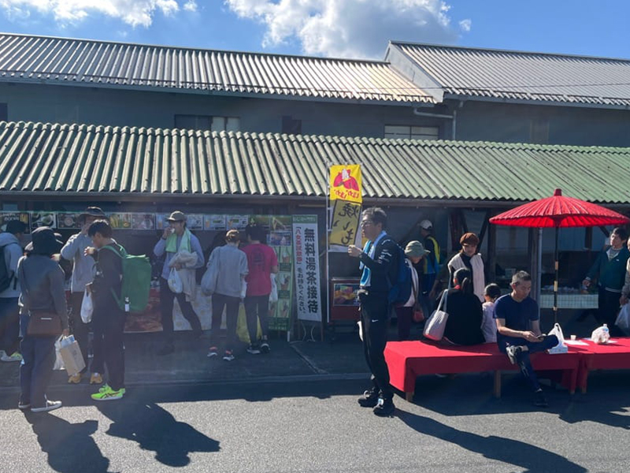
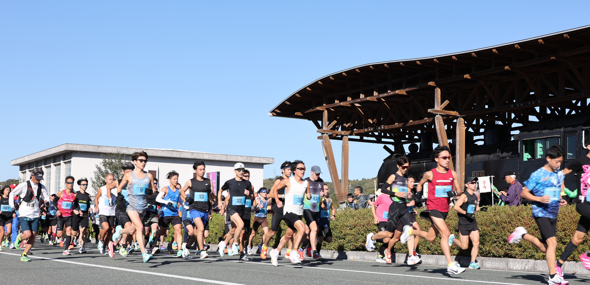
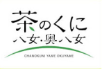
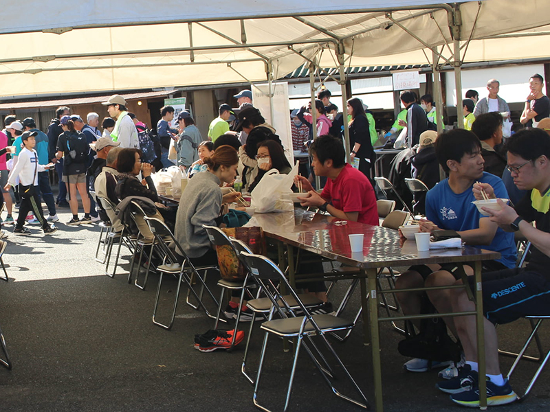
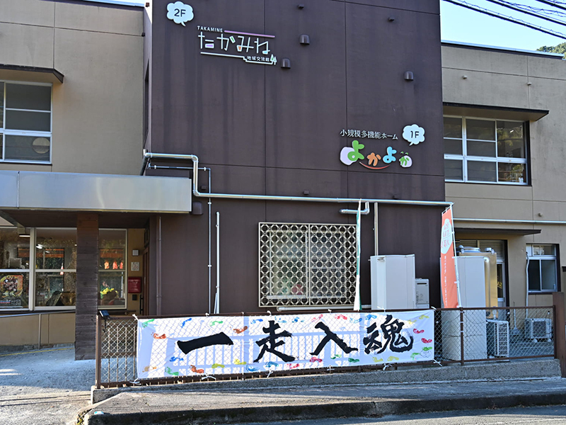
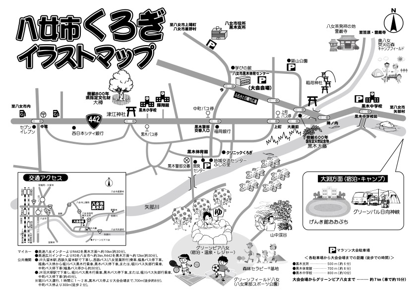
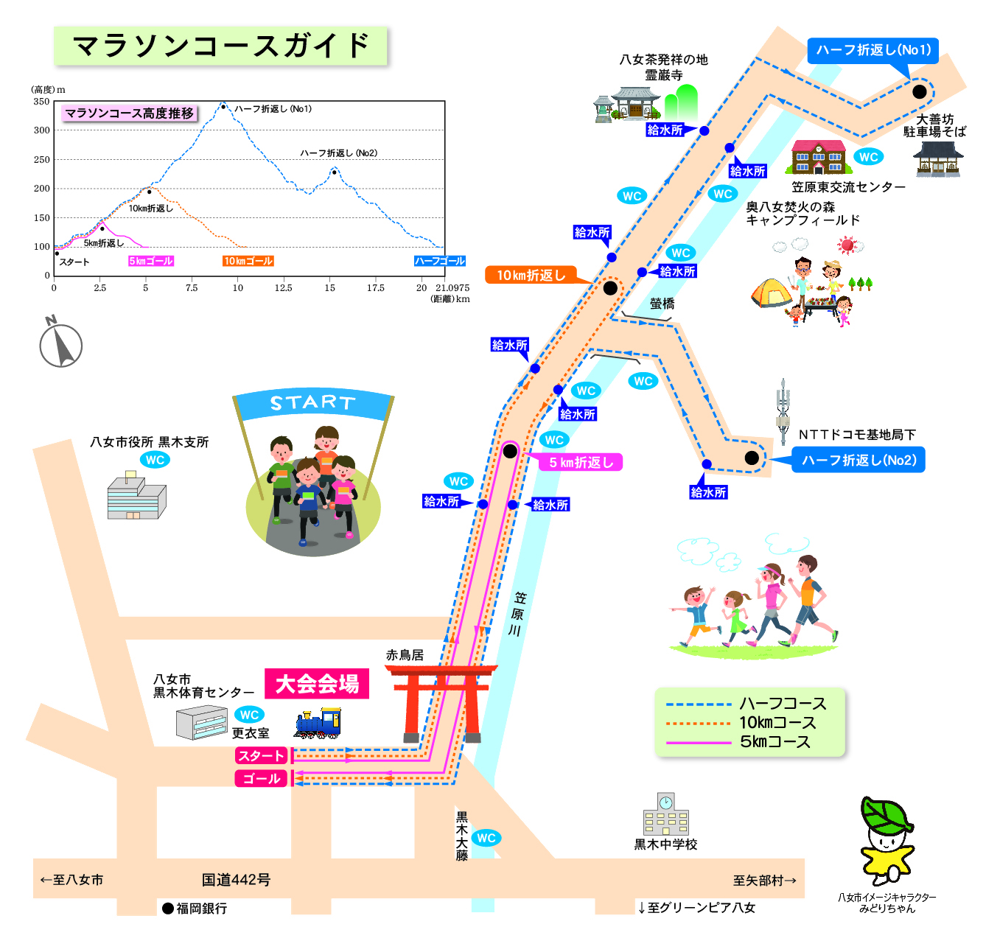

お楽しみポイント①
八女茶のおもてなし
ゴール後に味わう、淹れたての一杯。日本有数の高級茶どころ・八女ならではの香り高いおもてなしが、走り終えた身体に染みわたります。

ゆっくり走ろう、八女茶の里で秋を満喫！
美味しい八女茶や地元名物のだご汁が味わえるアットホームな雰囲気と、起伏に富んだハードコースとのギャップが、この大会のいちばんの魅力です。緑豊かな茶畑と清流に癒されながら、奥八女の美しい秋景色のなかをゆっくり駆け抜けてください。ゴール後は参加者抽選会もお楽しみ。八女茶などの地元特産品をはじめ、市内観光施設の宿泊券・10万円分の旅行券など豪華賞品が当たるかも！


ゴール後に味わう、淹れたての一杯。日本有数の高級茶どころ・八女ならではの香り高いおもてなしが、走り終えた身体に染みわたります。

地元のお母さんたちが腕をふるう、あったかいだご汁。寒い秋のゴール後にいただく郷土の味は、この大会だけのごちそうです。

温かい雰囲気とは裏腹に、コースは起伏たっぷりの本格派。やさしさと手強さのギャップこそ、リピーターを惹きつける理由です。
ご自身のペースに合わせて選べる3種目。スタート／ゴールはいずれも八女市黒木体育センターです。
「八女茶発祥の地」霊巌寺前を通る、起伏の多い本格コース。走りごたえ抜群の大会名物です。
奥八女の里山と茶畑の景色を楽しみながら走る、ちょうどよい距離。ステップアップにも。
小学生以下の方も参加できる、ファミリー・ビギナー歓迎の種目。秋の一日を気軽に。
奥八女の魅力あふれる美しい秋の景色のなかを駆け抜けるコース。なかでもハーフは、「八女茶発祥の地」として名高い霊巌寺前を通る起伏の多いコースとして大人気です。


ランナーズポータル「RUNNET」から、種目を選んでエントリーください。
※ ハーフ・10kmコースは小学生以下の方はエントリーできません。 ※ 大会当日の参加申込・オープン参加は不可です。
福岡県八女市黒木町今2318-11